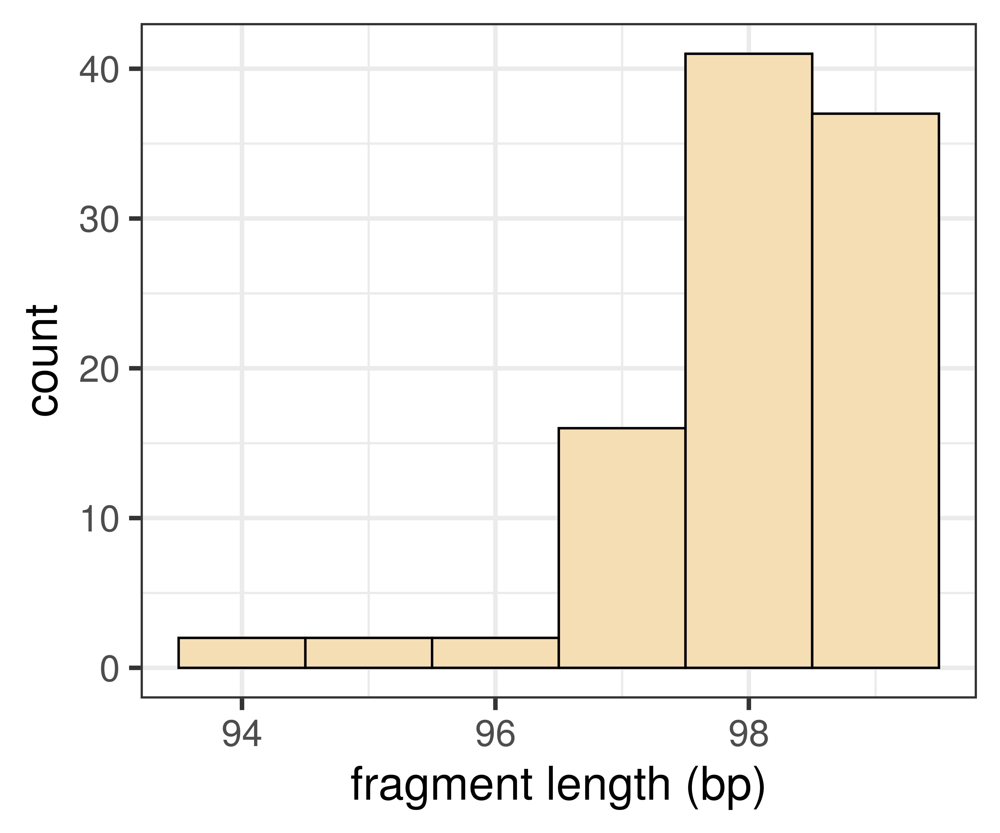
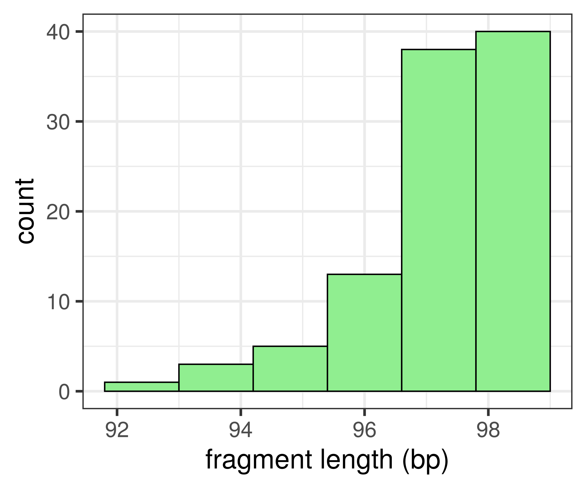

Non-Parametric Tests for Differences
BIOL40102: Research Methods and Bioethics
Dr Axel Barlow
email: axel.barlow@ntu.ac.uk
In this lecture...
- Selecting the appropriate test
- Mann-Whitney U Test
- Generating and presenting histograms
- Computing and presenting statistical tests
Chi-squared tests
- Can be used for counts of categorical variables
Chi-squared test of frequencies
- Test if the observed frequencies differ from the expected
- Useful in situations where we can predict frequencies under a particular set or rules or processes
Chi-squared test of independence
- Test if the observed frequencies between two groups are different
- Expected frequencies can be unknown
What about quantitative and ordinal variables?
- Continuous and ordinal variables provide a quantification
- We may want to know if different groups differ in size or magnitude
Continuous variable, normal distribution
- Parametric tests
- E.g. normally distributed data, 2 groups: t-test (week 32)
Continuous variable, unknown or complex distribution
- Non-parametric test
Ordinal variable
- Non-parametric test
Non-parametric vs. parametric tests
- Make fewer assumptions on the underlying data
- Can be a "safer" option if some aspects of the data are unknown
- Lower statistical power (higher false negative rate)
Used when a parametric test is not appropriate
How does it work?
- Not parametric tests tend to be based on ranks
- Example: how fast can students and professors carry out an experiment?
Student
10 10 20 21 27 45
Professor
15 16 32 33 35 37
How does it work?
- Not parametric tests tend to be based on ranks
- Example: how fast can students and professors carry out an experiment?
Student
10 10 -- -- 20 21 27 -- -- -- -- 45
Professor
-- -- 15 16 -- -- -- 32 33 35 37 --
How does it work?
- Not parametric tests tend to be based on ranks
- Example: how fast can students and professors carry out an experiment?
Student
1 2 -- -- 5 6 7 -- -- -- -- 12 = 33
Professor
-- -- 3 4 -- -- -- 8 9 10 11 -- = 45
- Note the original times have been replaced
- So the distribution of the data is not important, just their order
- Because we convert the data to ranks, the methods are naturally suited to ordinal data
Mann-Whitney U-Test
- Considered a non-parametric equivalent of the t-test
- 2 groups
- Ordinal or quantitative variable
- Observations must be independent
Hypotheses
- Do values in one group tend to be larger/smaller than the other group?
- If the distributions are similar: are their medians different?
Mann-Whitney U-Test
Example: oxygen saturation for 2 groups of patients (N= 100 per group)
Group1
## # A tibble: 100 x 1
## O2
## <dbl>
## 1 97
## 2 97
## 3 97
## 4 99
## 5 99
## 6 97
## 7 98
## 8 98
## 9 98
## 10 97
## # … with 90 more rows
Group2
## # A tibble: 100 x 1
## O2
## <dbl>
## 1 98
## 2 97
## 3 96
## 4 96
## 5 98
## 6 98
## 7 96
## 8 97
## 9 97
## 10 98
## # … with 90 more rows
Mann-Whitney U-Test
Example: oxygen saturation for 2 groups of patients (N= 100 per group)
Group1

Group2

Mann-Whitney U-Test
Example: oxygen saturation for 2 groups of patients (N= 100 per group)
- Median Group 1 98% O2
- Median Group 2 97% O2
- Mann-Whitney U-test results: W = 7685, p-value = 5.6987877 × 10-12
Next time
What do you need to know?